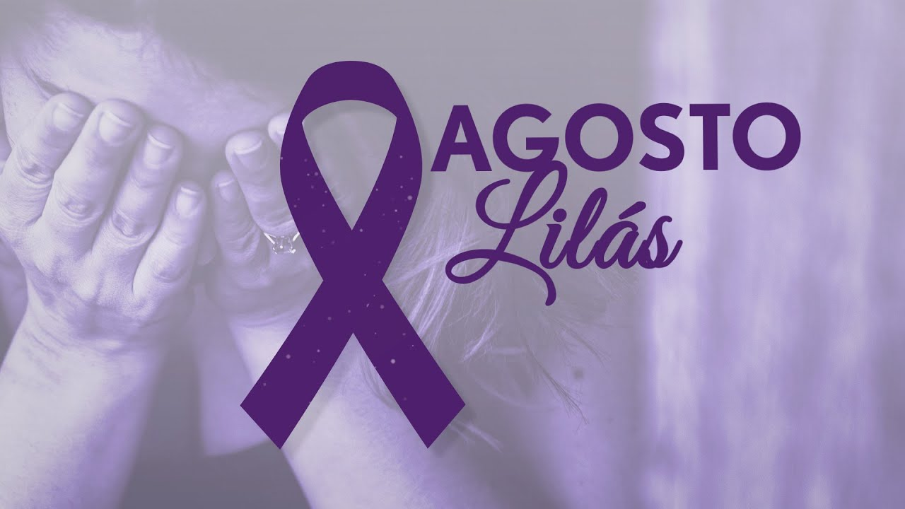

A violencia contra a mulher e um problema grave e real que acontece todos os dias. Muitas vezes, acontece dentro de casa e e silenciosa, escondida, ignorada. Precisamos falar sobre isso e combater todas as formas de violencia.
existem diferentes tipos de violencia: fisica, psicologica, moral, sexual e patrimonial. todas são graves e causam muito sofrimento.
Denunciar e um ato de coragem. Se voce precensiar ou sofrer violencia, procure ajuda.
Disque 180 - Central de atendimento a mulher. Funciona 24 horas, e gratuito e anonimo
Campanha do agosto lilas